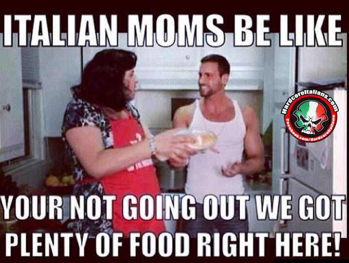

World's best lasagna

This lasagna is better than your nonnas, believe me.
A small history lesson.
The Italian favorite of lasagne or lasagna that we all know and love originated in Italy in the city of Naples during the Middle Ages. One of the first references to modern-day lasagne can be found in a 14th-century English cookbook that highlighted a dish with layers of pasta without the tomatoes. Later, another reference was made to lasagne in an Italian cookbook in the 1880s that featured tomato sauce.
The dish eventually evolved into the traditional lasagna of Naples called “Lasagna di Carnevale” made with local sausage, fried meatballs, hard-boiled eggs, ricotta or mozzarella, and Neapolitan Ragu. One of the most popular variations of this lasagna dish is called “Lasagna al Forno.” This variation originates from the Italian region of Emilia-Romagna and is made with ricotta or mozzarella, thick Ragu, bechamel sauce, wine, onion, oregano, and green sheets of pasta made with spinach. Lasagne’s history wouldn’t be complete without variety throughout the regions of Italy. Different areas may use different dough or sauces. The beautiful Italian region of Piedmont specializes in lasagna al Sangue, which translates to “bloody lasagne” due to the addition of blood from a slaughtered pig.
Ingredients
- 1 pound sweet Italian sausage
- ¾ pound lean ground beef
- ½ cup minced onion
- 2 cloves garlic, crushed
- 1 (28 ounce) can crushed tomatoes
- 2 (6 ounce) cans tomato paste
- 2 (6.5 ounce) cans canned tomato sauce
- ½ cup water
- 2 tablespoons white sugar
- 1 ½ teaspoons dried basil leaves
- ½ teaspoon fennel seeds
- 1 teaspoon Italian seasoning
- 1 ½ teaspoons salt, divided, or to taste
- ¼ teaspoon ground black pepper
- 4 tablespoons chopped fresh parsley
- 12 lasagna noodles
- 16 ounces ricotta cheese
- 1 egg
- ¾ pound mozzarella cheese, sliced
- ¾ cup grated Parmesan cheese
Instructions
- In a Dutch oven, cook sausage, ground beef, onion, and garlic over medium heat until well browned. Stir in crushed tomatoes, tomato paste, tomato sauce, and water. Season with sugar, basil, fennel seeds, Italian seasoning, 1 teaspoon salt, pepper, and 2 tablespoons parsley. Simmer, covered, for about 1 1/2 hours, stirring occasionally.
- Bring a large pot of lightly salted water to a boil. Cook lasagna noodles in boiling water for 8 to 10 minutes. Drain noodles, and rinse with cold water. In a mixing bowl, combine ricotta cheese with egg, remaining parsley, and 1/2 teaspoon salt.
- Preheat oven to 375 degrees F (190 degrees C).
- To assemble, spread 1 1/2 cups of meat sauce in the bottom of a 9x13-inch baking dish. Arrange 6 noodles lengthwise over meat sauce. Spread with one half of the ricotta cheese mixture. Top with a third of mozzarella cheese slices. Spoon 1 1/2 cups meat sauce over mozzarella, and sprinkle with 1/4 cup Parmesan cheese. Repeat layers, and top with remaining mozzarella and Parmesan cheese. Cover with foil: to prevent sticking, either spray foil with cooking spray, or make sure the foil does not touch the cheese.
- Bake in preheated oven for 25 minutes. Remove foil, and bake an additional 25 minutes. Cool for 15 minutes before serving.
